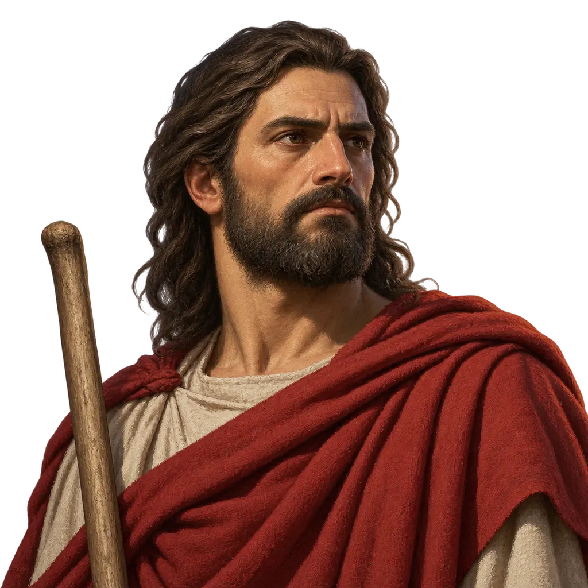
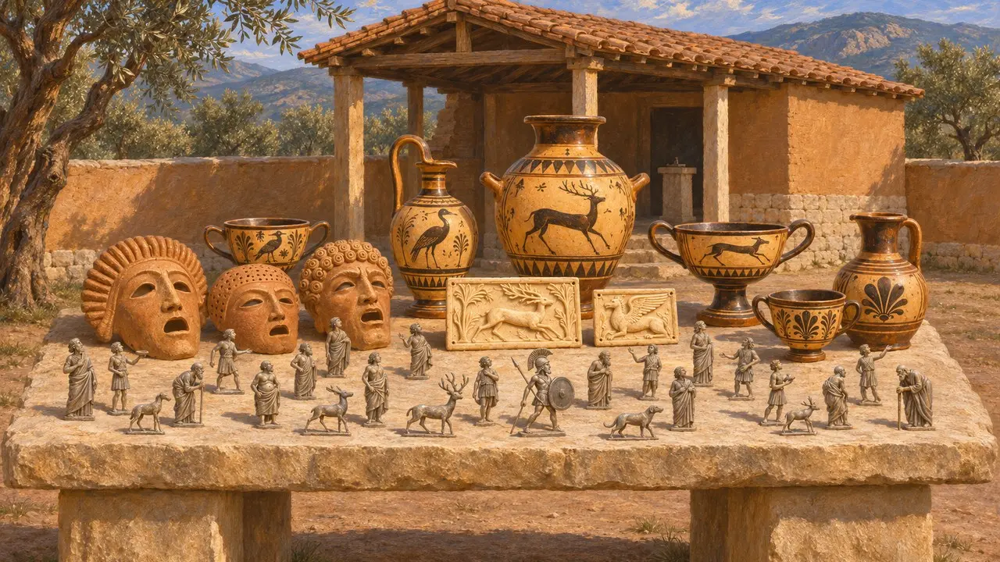
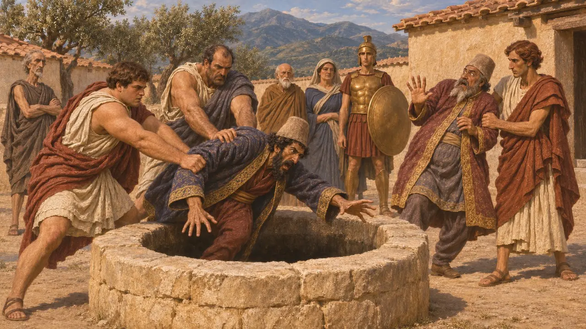
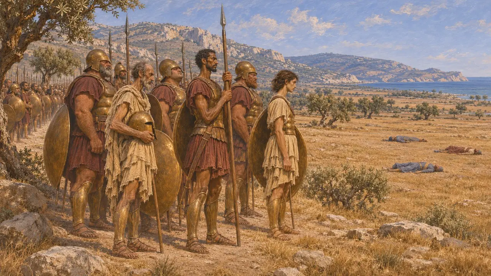
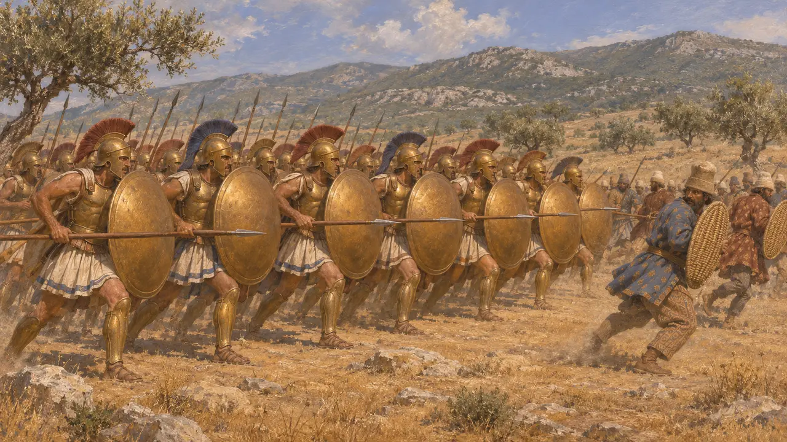
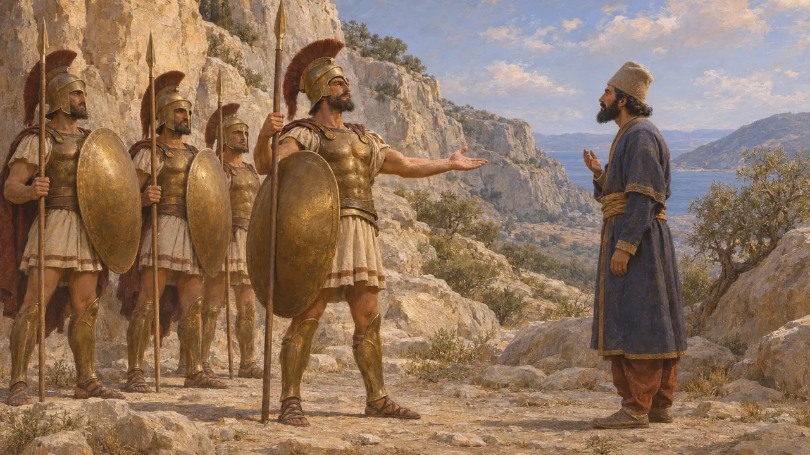
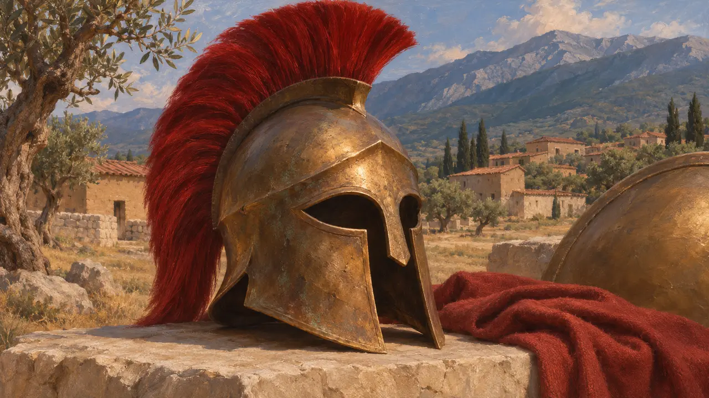

Gli Spartani
I cittadini di Sparta in Laconia, la principale potenza terrestre della Grecia, 550-479 a.C. circa
Nel gioco: Livello 10: Le Porte Calde, Livello 11: Il finale
Gli Spartani erano i cittadini di Sparta in Laconia, la maggiore potenza terrestre della Grecia nel VI secolo. Un piccolo corpo di cittadini a pieno titolo, gli Spartiati, viveva delle terre lavorate dagli iloti e guidava una lega di alleati peloponnesiaci. Rifiutarono a Dario terra e acqua; i loro soldati affrontarono l'esercito di Serse alle Termopili nel 480 e guidarono la vittoria greca a Platea nel 479.
Nel gioco: Il gioco elenca Sparta come partner commerciale, ma non è attestato alcun commercio tra Sparta e la corte persiana, quindi si tratta di una semplificazione. I soldati spartani compaiono alle Termopili e a Platea, dove effettivamente combatterono.

Ciò che rivelano gli scavi a Sparta
Nelle fontiLa British School at Athens scavò il santuario di Artemide Orthia tra il 1906 e il 1910, riportando alla luce migliaia di piccole figurine di piombo, insieme ad avori e maschere di argilla. Ceramica dipinta laconica del VI secolo è stata rinvenuta a Samo, a Cirene e in Etruria. Questi ritrovamenti mostrano una città che produceva ed esportava beni pregiati, il che complica l'immagine, più tarda, di una Sparta chiusa e austera.
R. M. Dawkins (ed.), The Sanctuary of Artemis Orthia at Sparta, 1929

Sparta e i re persiani
Racconto anticoErodoto narra che Creso di Lidia strinse un'alleanza con Sparta. Caduta Sardi, gli Spartani inviarono un araldo per intimare a Ciro di non toccare le città greche d'Asia. Si dice che Ciro abbia risposto di non temere uomini che si radunavano in una piazza per ingannarsi a vicenda. In seguito il re Cleomene respinse la supplica di Aristagora che chiedeva aiuto per la rivolta ionia, e quando gli araldi di Dario chiesero terra e acqua, gli Spartani li gettarono in un pozzo.
Herodotus 1.69-70, 1.152-153, 5.49-51, 7.133

Perché gli Spartani non combatterono a Maratona
ContesoErodoto afferma che nel 490 gli Spartani accettarono di aiutare Atene, ma non vollero mettersi in marcia prima della luna piena. Secondo il suo racconto, 2.000 di loro raggiunsero l'Attica solo dopo la battaglia e si recarono a Maratona per vedere i caduti persiani. Platone sostiene invece che a trattenerli fu una guerra con i Messeni. Gli storici discutono ancora se il ritardo dipendesse da un precetto religioso, da una rivolta degli iloti o dalla riluttanza a combattere così lontano da casa.
Herodotus 6.106, 6.120; Plato, Laws 698e

Le Termopili e Platea
Racconto anticoErodoto racconta che nel 480 il re Leonida tenne il passo delle Termopili con 300 Spartiati e alcune migliaia di alleati, finché un sentiero di montagna permise ai Persiani di accerchiarli. Nel 479 il reggente Pausania guidò l'esercito greco a Platea. Erodoto vi conta 5.000 Spartiati, ciascuno con sette iloti, cifre forse gonfiate. Spartani e Tegeati sconfissero le truppe persiane schierate attorno a Mardonio, e Mardonio fu ucciso.
Herodotus 7.202-228, 9.28-29, 9.61-64

Il miraggio spartano
Leggenda posterioreGran parte dell'immagine familiare di Sparta proviene da autori vissuti secoli dopo. Plutarco, che scriveva intorno al 100 d.C., tramanda detti come la sfida di Leonida a Serse di venire a prendersi le armi degli Spartani. Attribuisce l'intero sistema spartano a un legislatore, Licurgo, la cui epoca e la cui stessa esistenza sono incerte. Gli studiosi moderni chiamano questa immagine idealizzata il miraggio spartano.
Plutarch, Sayings of Spartans; Plutarch, Lycurgus; F. Ollier, Le mirage spartiate, 1933

L'emblema accanto al nome
Nelle fontiGli Spartani portano un elmo corinzio con un cimiero di crine di cavallo rosso spartano, il colore che secondo Senofonte indossavano in guerra. Il lambda sugli scudi spartani è attestato solo più tardi e non viene usato. Sparta non coniò monete in questo periodo.
Xenophon, Constitution of the Lacedaemonians 11.3
Fonti
- Herodotus, Histories
- P. Cartledge, Sparta and Lakonia, 2002
- R. M. Dawkins (ed.), The Sanctuary of Artemis Orthia at Sparta, 1929
- Plato, Laws 698e
- Plutarch, Lycurgus
- F. Ollier, Le mirage spartiate, 1933